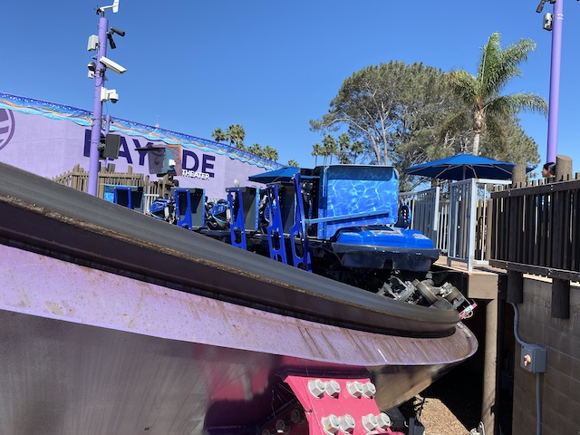
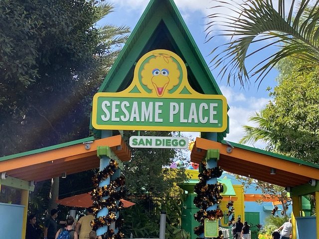
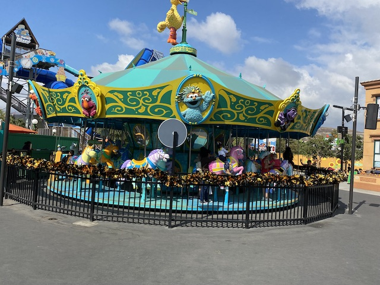
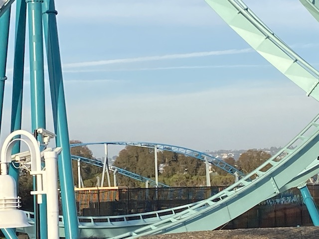
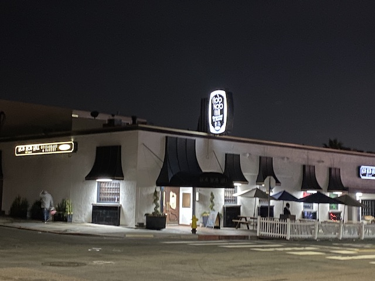

| |
Sesame Place 2022
All right. So a small park opened up this year. Sesame Place. Well, sort of. It had been a water park all this time, most recently being Aquatica San Diego. However, Sea World saw just how popular Sesame Place was on the East Coast and thought "Hey! We should do that here!". So they converted Aquatica San Diego and turned it into Sesame Place San Diego. And since our Sea World pass gets us into the park for free, and the fact that it still looks like a cool water park, we had to check it out and do some credit whoring. We also decided to throw in our later visits to Sea World as there's some things that I definately want covered on the site. =) So yeah. Time for another very spontaneous day at Sea World that wasn't planned until about 24 hours beforehand.
As soon as we learned about the crisis of the starfish, we just had to come down hear ASAP.
Jason, I don't think this is helping with the Sea Star Wasting Crisis. Perhaps we should try and think of a different solution.

OK. So the real reason for this spontaneous visit is that Tidal Twister is open. A friend was at Sea World the day before, and I saw him post a Facebook status saying that Tidal Twister was open, but didn't want to ride it because it sucks. HOLY SH*T!!! TIDAL TWISTER IS OPEN!!! WITH HOW UNRELIABLE THIS RIDE IS, GET THE F*CK ON IT NOW BEFORE IT CLOSES YET AGAIN FOR AN INDEFINATE PERIOD OF TIME!!! So I went the next day, and...mission accomplished.
So Tidal Twister is....a fun ride. Honestly, the best way for me to describe it would be to take a standard Bayern Curve, if you made it into a figure 8, and gave it an inline twist. Sounds really fun. And it's a really cool concept. Only issue is that....it's kind of rough. Not unbearably rough. But this thing DEFINATELY needed more work done and to make it smoother (Probably should've removed those awful bulky OTSRs). Yeah. Much like Harley Quinn, I didn't hate this NEARLY as much as everyone else.
And also much like Harley Quinn, it did not last long and since then, has closed for good and has been removed from Sea World San Diego. Not exactly a shock. I was predicting this would happen given how unreliable it is, only wanting a chance to ride it before it got demolished. And....I was not only right in that it was on limited time and would suffer a similar fate to Windseeker @ KBF, but also got my wish in getting to ride it before it went. Not terribly sad that it's gone since....far from the best ride ever. But it still was fun (again, I didn't hate it the same way other enthusiasts did). BTW, it WAS NOT a credit.
Love soaking bastards stupid enough to go on the water rides at this time of year! >=)
Aw damn! It's closed today! =(
Uh oh. What race is your mermaid? Wouldn't want to piss off a certain group of people. Oh wait! What am I f*cking talking about? I TOTALLY want those people pissed off! =P
Psst! Hey Sea World! It's September! You're jumping the gun! It's not time for Halloween (much to the dismay of all my halloween-obsessed friends).
 OK. It's time we actually got on a roller coaster today. =)
OK. It's time we actually got on a roller coaster today. =)
 Electric Eel from the dolphin show.
Electric Eel from the dolphin show.
Time to check out Dolphins Adventure. One of the few classic shows Sea World still does. =)
So the show does a lot of cool tricks to music. Most of the music is meh. But one thing they played was this EDM cover of the Beatles "Here Comes the Sun" by Smith & Thell. And god damn it! That thing has become an earworm embedded into my brain obnoxious enough for me to hunt down and download the song.
*gasp* "HOW MANY DOLPHINS ARE YOU TORTURING SEA WORLD!!?" ='( (End Sarcasm)
 Bitch better have my fish! =)
Bitch better have my fish! =)
For some reason, that just looks like the entrance to a roller coaster. Hey. It would make for a really nice entrance. Not gonna lie.
I know it has a bit of a line, but it's still a really fun ride and definately something I want to check out on this visit to Sea World.
Ugliest baby penguin ever.
Can us sea turtles please form a union?

So at first glance, this may look solely like a credit whoring stop. And yeah. We're primarily here for that. But there's actually a decent looking water park here. So...let's see how that is.
 "You guys here for the water park? Bro, We've got some bad news to share with you."
"You guys here for the water park? Bro, We've got some bad news to share with you."

Yeah. Most of the water slides are closed since...we went in October since....we procrastinated and didn't really prioritize it since...it's Sesame Place. So we missed the water park season (forgetting that despite SoCal not really having seasons and not even getting chilly until mid-November). Bummer, but not too surprising. We f*cked up on this one.
So slmost all of the adult slide of this park when it was Aquatica San Diego were kept (only the Drop Slide was removed). I have to say that I'm impressed that so many of the standard adult slides stayed. The park actually seems like a fun water park. OK. Nothing on par with New Wild Rivers, SunSplash, or even Raging Waters. But it still seems to be a fun water park totally worth visiting (especially if its free).
The ONE (adult) water slide that was still open was their Helix Mat Racer, Honker Dinger Dash. So of course, we had to ride it. You know, it's funny how I went from always wanting to ride one to getting on 3 in one year. They're really fun rides. Also, I can't think of the name of this slide without thinking of that old-school Sesame Street song.
So the park mostly was just the dry rides. And....yeah. This part of the park is very much a credit whoring place. Well, aside from not getting the unwelcome death glares gotten at a handful of other credit whoring parks. I must say, that is nice. =)
 With the water park down, this is essentially our primary reason for being here.
With the water park down, this is essentially our primary reason for being here.
 Cha-Ching! Credit #686.
Cha-Ching! Credit #686.
Believe it or not, I actually can see myself returning here. Really hoping they add an Oscar's Wacky Taxi clone (or something of equivelant size. With how much Busch has been wanting to invest via coasters in their parks, I could unironically see this happening one of these years). If they do, I'll totally come back not only to whore that, but also make sure to come in the summer so I can check out the water park that actually looks good (Especially if I'm able to get in for free). =)
 With most of the water park closed, our time here was drastically cut short and we got an early start on the rest of our San Diego plans.
With most of the water park closed, our time here was drastically cut short and we got an early start on the rest of our San Diego plans.
And we're back at Sea World for the holidays. I was initially gonna ignore this day and not put it in the update. But there's a small number of photos from here I wanted to share (Fun ride on Emperor BTW).

Arctic Rescue construction photo! Actually, I STILL have yet to ride it despite being a BIG COASTER IN SO-CAL BECAUSE 2023 IS THAT F*CKING BAD!!! >=( (Well, at least that'll change VERY soon)
Bigots and the worst people on Earth may be empowered to spew their disgusting hate right now, but just know that it's still OK to be gay....I mean have a red nose!
Love how they turned their Sky Tower into a Christmas Tree for the holiday season.

And now, time for the real reason for us to head down. A big group dinner at Hob Nob Hill (Really good resteraunt BTW).
This is the only place I've seen Cincinatti Chilli (excluding Ohio for obvious reasons). So obviously, I had to get it. And....I really love their chilli (Probably the only thing Ohio does right theme parks aside). So yeah. I definately recommend this resteraunt if you're in San Diego. I'm GREATLY overdue to go back (for many reasons). And luckily, my next visit will be VERY SOON (Look for that update soon).
Home
|